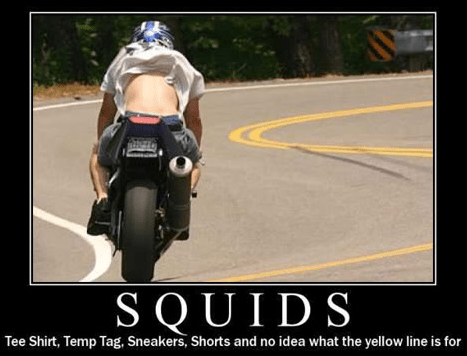
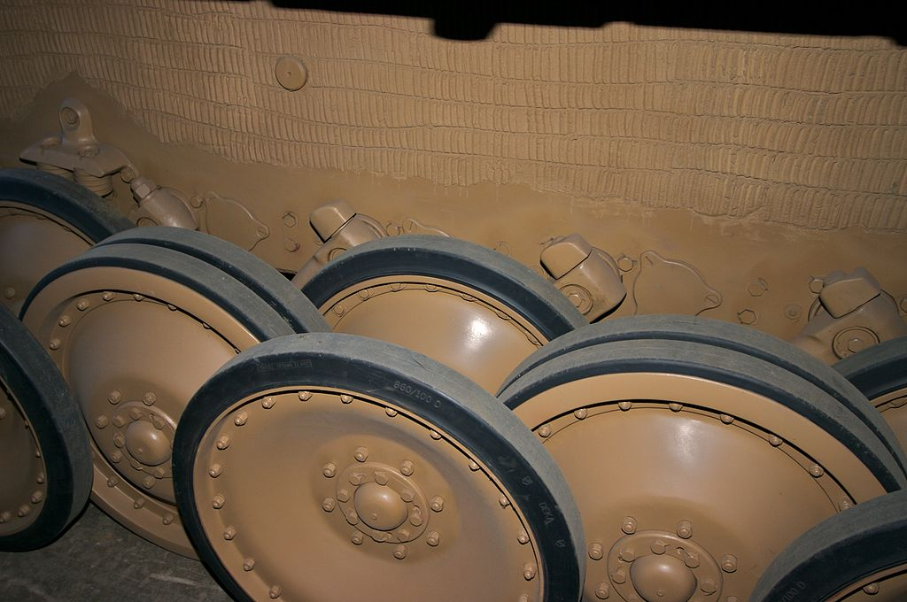
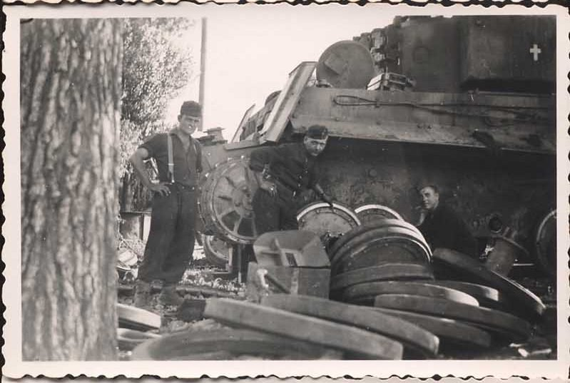

No, the post is not about President Trump.
As I'm working in ecommerce tech support department I receive lots of complaints to deal with. Mainly they're typical and boring - discrepancies in price, inventory, wrong fitment or description of an item. But sometimes I have unusual ones.
This one is from ex-marine, who went on your e-store and looked for some military discount to apply and receive a dropped price. But what he saw made him drop his jaw. The problem in few words - "Order precedence". Here's what he sent us:
"I might even consider using it if the Eagle, Globe, & Anchor was placed 2nd in precedence where it belongs. Never mind whether the fork seals are in stock, we have a heinous protocol violation!!!! I'm not getting in formation behind any squids. They can pick up their swabs and follow me."
And an explanation from a sales agent who spoke with the marine: "Please change the order of Military emblems according to the screenshot provided above. Reason: One of the forum members, ex marine, noticed that the order of military logos is incorrect and he seems to be offended that our page violates the order of precedence. The correct order is this: U.S. Army, Marines Corps, U.S. Navy and so on. The same order of flags is described in this Wiki page: Order of Military Flags Wiki More about the use of military seals and logos from the Defense Department (the same order described): Rules from Defense Department. Thank you!"

Different military services in the US serve together, fight together but often they argue who's the most important. They always tend to show off on parades, when marches of different services are played, when flags are flown and even during Memorial Day, commemorating those who died in combat.
Last week President Trump announced the death of an infamous Islamic State leader Al-Baghdadi as a result of the US spec-ops' successful operation. What interests us is flags and their position. Look closer at the photo above!
The order of precedence when displaying military flags together is Army, Marine Corps, Navy, Air Force and Coast Guard. Like on the photo. But when it's war Coast Guard Flag moves up, taking place between Navy and Air Force, because is is considered to be as a part of Navy. But for now it is not under the Department of defence but under the Department of Homeland security. They stop illegal migrants, deter drug-trafficing submarines, save people in the waters. So Coast Guard is closer to the Police and lifeguards in times of peace.
So, inceptions of all the deparments:
- Army - June, 14 1775.
- Navy - October, 13 1775.
- Marine Corps - November, 10 1775.
- Coast Guard - August, 4 1790.
- Air Forces - August, 1 1907.
Actually, there is the "Big Four": Army, Marines, Navy and Air Force.
Army comes first because it was created first - June, 14 1775.
The second to come according to the logic had to be Navy, but after the war for independence had finished the ships were sold and sailors released. The same is true about marines who were disbanded. But infantry never. So, my logic that the order of precedence has something to do with the date when the departments were officially formed doesn't work here. Let's move on and find out more.
By the end of 1890s there had already existed a protocol, according to which, when Marines and Navies paraded together, the Marines' flag had more honorable position at the right.
As it has been already said, all the services want to show who's the most important. But rivalry between navy and marines expecially strong. Marines call navy "Squids", navies marines - "Jarheads". The "Jarheads" nickname appeared first, during WWII, presumably because of their haircut. Split the word "Jarhead" - and you'll get it. "Squids" - closer to Veitnam war and was attributed to sailors who would blow their deployment money on fast Japanese motorcycles and booze. They would drown them selves in rum, then crash their motorcycles like squids (aquatic animal that swims fast but crashes into everything).
This version stemmed so deep in the US culture that there are multiple memes about Squids and bikes across the Internet even now.

There's a stereotype that a jarhead is brave but not bright and a squid is always tipsy and makes stupid things more easily.
 Squids has always be throwing away their money on women and booze, but breaking the furniture and scarying away other visitors. And some pub owners preferred to keep squids out of their pubs. There are even signs remained from the times when squids were not welcomed to walk into some pubs.
Squids has always be throwing away their money on women and booze, but breaking the furniture and scarying away other visitors. And some pub owners preferred to keep squids out of their pubs. There are even signs remained from the times when squids were not welcomed to walk into some pubs.

From about 1960 to 1975, a sailor who called a marine a "jarhead" or a marine who called a sailor a "squid" were actually using code words for, "I want you to start the fight". Another interesting fact is that crew of amphibious ships that taxied marines to their battle zones stood with marines and against sailors when another bar fight started, even though they were sailors.
 I've been reading forums on Quora and found out that another way to piss off a marine who's confident in his supremacy over sailors is to ask him to turn over his military ID which clearly reads "Department of the United States Navy".
For now these nicknames are so deeple rooted into culture that are a subject of numerous jokes, funny videos. I go over to military services Wikipedia official pages and spotted "Jarheads" even on there (but not "squids" though).
I've been reading forums on Quora and found out that another way to piss off a marine who's confident in his supremacy over sailors is to ask him to turn over his military ID which clearly reads "Department of the United States Navy".
For now these nicknames are so deeple rooted into culture that are a subject of numerous jokes, funny videos. I go over to military services Wikipedia official pages and spotted "Jarheads" even on there (but not "squids" though).

But this mutual enmity stops abruptly when there are Airmen in a bar and fight begins. In that case marines and sailors back up each other.
Oh, we almost forgot.There are infantrymen. They are respected because they are always in a close combat with the enemy and their human losses are the biggest but they are ironically called "Grunts" which means the sound a hog produces.
Lt. DanThere is one item of GI gear that that can be the difference between a live grunt and a dead grunt. Socks... Try and keep your feet dry”
"Forrest Gump"
Truth to be told different services in different countries don't get along as well.
I clearly remember a story told by my proffessor about a huge and violent fight between Luftwaffe and Panzerwaffe which took place in "Drei Ferkels und Sieben Gnomen Bar" in Berlin in may 1944. It was caused by an SS standartenfuhrer, who was never identified by the investigation after (injured Luftwaffe pilots recalled in hospital that it was an Otto or an Otto von). That Otto who had been drinking in the pub along with th pilots, sent to tankies who also had been in the pub, a set of empty plates served in the chess order. That so freaked them out that a battle began. Firehoses were used to stop it and the participants didn't even notice an american air raid of 1000 bombers. Plates... in a particular order... in chess order... and what? What's so insultive?
Introduced in 1942 "Panzer VI", more well know as "Tiger" was an excellent heavy tank. But, like Ahilless, it had a fatal flaw. It was their chassis. Their road wheels were constructed to distribute the weight of the tank on the ground equally which made driving more seamless and comfortable and prolonged lifecycle of the rubber part of the wheel. But this construction of suspension system was difficult to produce and maintain. E.g., it took all day for the crew to replace only one wheel from inner row. In harsh conditions of russian fall and spring when during the day it was a thaw and mud which accumulated between wheels and at night it froze. In the morning checkup showed that tanks couldn't move because wheels were stuck dead. The only way to fight it was to heat up wheels and with a crowbar clean them. Tank crew for the rest of their lives couldn't forget that nightmare.



In Soviet Army during WWII there were numerous examples of enmity between different services, especially between infantry, artillery and tank warfare. Artillery was blamed in "friendly fire" that took many lives of soviet soldiers because there were practices of suicidal offensives not after but while preliminary bombardment of enemy's positions. Nowadays in post-soviet countries it's noticible that airborne forces (paratroopers) consider themself unlike the others, just remember their motto "Nobody, but us!" and the annual tradition to cool off in fountains.